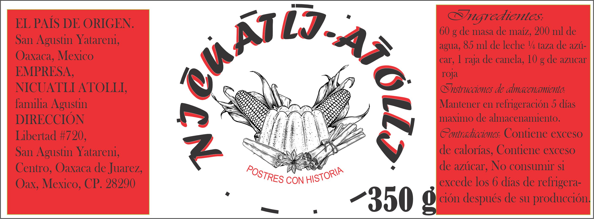

COLEGIO DE BACHILLERES DEL ESTADO DE OAXACA
MI PRODUCTO - ETIQUETA-

REQUISITOS LEGALES
EL PAÍS DE ORIGEN.
San Agustin Yatareni, Oaxaca, Mexico
QUIÉN LO PRODUCE.
Empresa NICUATLI ATOLLI, familia AGUSTIN
CANTIDAD E INGREDIENTES.
INGREDIENTES POR MOLDE MAS COMERCIAL 300 g:
60 g de masa de maíz
200 ml de agua
85 ml de leche
¼ taza de azúcar
1 raja de canela
20 g de azucar roja
NOMBRE COMERCIAL DEL PRODUCTO
NICUATOLES “NICUATLI´S”
DIRECCIÓN DEL PRODUCTOR, EXPORTADOR, IMPORTADOR Y/O DISTRIBUIDOR.
Libertad #720, San Agustin Yatareni, Centro, Oaxaca de Juarez, Oax, Mexico, CP. 28290
PESO NETO, PESO BRUTO, PESO DRENADO, CANTIDAD DEL PRODUCTO O VOLUMEN.
Peso neto: 345 g
Peso bruto: 350 g
cantidad del producto: pieza
INSTRUCCIONES DE USO Y ALMACENAMIENTO.
INSTRUCCIONES DE ALMACENAMIENTO:
Mantener en refrigeración
5 días maximo de almacenamiento
CONTRAINDICACIONES, ADVERTENCIAS, RIESGOS
Contiene exceso de calorías
Contiene exceso de azúcar
No consumir si excede los 6 días de refrigeración después de su producción.